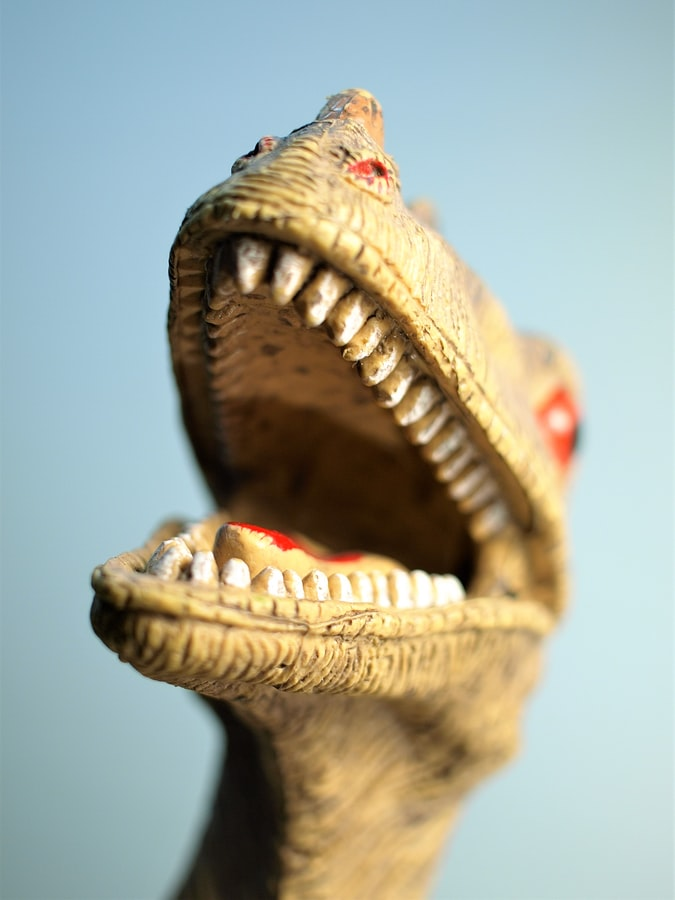

(Latince: Dinosauria) geniş bir sürüngen hayvan grubudur. Dinozor, Yunancada korkunç kertenkele (deinos+sauros) anlamına gelen iki sözcüğün birleştirilmesinden oluşturulmuştur. Bunun nedeni, geçmişte bilim insanlarının dinozorları bir cins kertenkele sanmalarıdır. Dinozorlar 243-233 milyon yıl önce yaşanan Geç Trias devrinde ortaya çıkmış ve 66 milyon yıl önce de kuşlar haricindeki tüm türlerin nesli tükenmiştir. Dinozorlar sıcakkanlı ve soğukkanlı arası özellikler gösteren mezoterm canlılardır.
Keşif
Dinozorların ilk olarak ne zaman toplumların ilgisini çektiğini bilemiyoruz; ancak klasik çağ'dan başlayarak belli varsayımlarda bulunabiliriz. Bazı tarihçiler ve paleontologlar geç kretase döneminde Campanian zamanında yaşamış Protoceratops'un Greco-Romen kültürde yansımasını bulmuş olabileceğine inanıyorlar. Muhtemelen bu kalıntıların bulunması ve onların dönemin insanlarınca masalsı yaratıklar olarak adlandırılması söz konusudur(Griffin, Zümrüdü Anka kuşu vb). Yeni çağ dolaylarında artık modern bilimin ayağa kalkmaya başladığı zamanlarda eksik keşifler yapılmıştır. 1676'da Oxford Üniversitesi'nde görevli bir rahip olan Robert Plot, bir dinozora ait olduğu bugün bilinen bir uyluk kemiğini Roma döneminden kalma savaş filine ait bir kalıntı sanmıştır. Örnekler çoğaltılabilir; ancak dinozorların ve doğa bilimlerinin zirve noktası 19. asrın başlarıdır. İlk olarak dinozorların ciddi bilimsel araştırmaların konusu olması İngiliz doğa bilimci Richard Owen'ın katkısıyla oldu, çünkü dinozor tabirini ortaya koyan kendisiydi. Bilimsel anlamda incelenen ilk dinozor fosili ise Megalosaurus oldu bu orta Jurasik etçili, William Buckland tarafından bulundu. Bilimsel anlamda son 200 yılda bir avuç eksik numuneyle başlayan dinozorları tanımlama süreci bugün en az 800 cins ve neredeyse 1000 türle büyük bir yekûn işgal etmeye başladı. Bu geniş canlılar grubunun da hâlâ daha yeni bulgularla değişebilecek bir evrim süreci vardır.